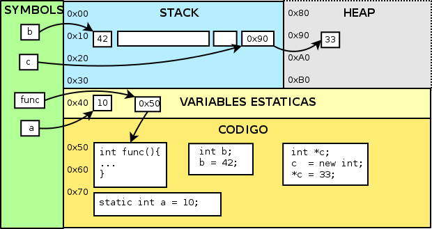

ELO320 - Estructuras de Datos y Algoritmos
Punteros
Marie González-Inostroza
Programa en Memoria
- Ejecutar: llevar un programa (binario) a memoria.
- Variables y Constantes: espacios que se asignan y liberan en memoria
- Ciclo de vida: cuándo se crea y destruye una variable
- Ámbito: qué código tiene acceso a la variable

Taxonomía de la memoria

Segmentos de memoria
Memoria text
Donde el programa compilado se mantiene en memoria.
Memoria static
Mantiene variables globales y estáticas.
Ligado estático: variables (y valores) en la memoria hasta que programa termina.
Memoria heap
Permite al programador crear y eliminar objetos de memoria dinámicamente.
Son referenciadas indirectamente mediante punteros y/o referencias.
Memoria stack
Área dinámica de memoria donde se guardan las variables locales y la información de las funciones.
Objetos se asignan/liberan automáticamente en tiempo de ejecución.
Manejado automáticamente por el compilador.
Variables estáticas - static
long int y; // var global
static int z = 1; // global estatica;
// solo visible a este archivo.
int est3_st4tic(){
static int a=0; // local estatica
a++; // no pierde su valor al finalizar ámbito
return a;
}
int fun() {
int i;
for(i=0;i<10;i++){
printf("vuelta numero %d\n", i);
printf("pero no pierde su valor: %d\n", est3_st4tic());
}
return 0;
}
Ejemplo
Resumen
- Stack → Variables locales, funciones (rápido, limitado).
- Heap → Memoria dinámica (flexible, debes administrarla).
- Data → Globales y estáticas (persisten toda la ejecución).
- Text → Código ejecutable.
Dirección de Memoria o Referencia
- Las variables de stack son cajones que pueden guardar valores.
#include<stdio.h>
int main(){
int b;
scanf("%d", &b); // ¿Por qué &b?
return 0;
}
El operador & nos entrega la ubicación de memoria donde se encuentra el cajón.
Punteros en C
Se definen con el modificador *, e indicando su tipo.
int utfsm1 = 1680;
int utfsm2 = 3939;
int *dir = NULL; // puntero a int
dir = &utfsm1;
printf("Dirección dentro de dir: %p\n", dir);
printf("Valor dir: %d\n", *dir);
printf("Dirección de dir: %p\n", &dir);
Diremos que un puntero apunta a la dirección de memoria que almacena.
Tipos de Punteros
- Punteros a tipos primitivos: int, float, char, etc.
- Punteros a arreglos: apuntan al primer elemento del arreglo.
- Punteros a estructuras: apuntan a la dirección de una estructura.
- Punteros a funciones: apuntan a la dirección de una función.
Valor NULL
Un puntero puede inicializarse a NULL, indicando que no apunta a ninguna dirección válida.
int *ptr = NULL; //Inicializado como puntero nulo:
double *d = NULL;
Es una buena práctica inicializar punteros a NULL para evitar errores de acceso a memoria.
Dereferenciación
Acceder al valor al que apunta un puntero usando el operador *.
int utfsm1 = 1680; //Dos variables de tipo int.
int utfsm2 = 3939;
int *dir = NULL;
dir = &utfsm1; //Puntero a un int, apunta a donde está utfsm1
printf("Dirección dentro de dir: |\%|p\n", dir);
printf("Valor dir: |\%|d\n", *dir);
printf("Dirección de dir: |\%|p\n", &dir);
El operador * nos permite acceder al valor almacenado en la dirección a la que apunta el puntero.
Aplicaciones de punteros
- Manipulación eficiente de arreglos y estructuras.
- Implementación de estructuras de datos dinámicas (listas, pilas, colas).
- Interacción con memoria dinámica (malloc, free).
- Optimización de rendimiento en ciertas operaciones.
Aritmética de Punteros
- Transforma 1 unidad decimal en 1 unidad según el tamaño del tipo.
- Podemos saber cuánta memoria hay entre un puntero y el siguiente (si existe).
float num = 2.5;
float *f;
f = # //Dirección a num.
printf("Direccion f: %p\n", f); //¿Cuál es la diferencia
printf("Direccion f+1: %p\n", f+1); //entre f y f+1?
Arreglos y Aritmética de Punteros
- Un arreglo puede trabajarse con aritmética de punteros.
- Los arreglos son compatibles con punteros.
- El nombre del arreglo es un puntero al primer elemento.
int a[10], i;
int *pa, *pb;
pa = &a[0]; /* dir. elemento 0 de arreglo a */
pa = a; /* lo mismo con coerción */
pb = &a; /* dir. de arreglo a. tamaño 10 int */
for (i=0; i<10; i++){
printf("%d ", a[i]);
printf("%d ", *(pa+i));
printf("%d ", *(a+i));
}
printf("%d ", *(pb+1)); //¿Qué pasa acá?
Actividad 5.1: Punteros
En parejas, corran el código y observen las salidas. Comenten las preguntas guía.
El código base está en Classroom: https://classroom.github.com/a/09zSRlZr
Funciones y Punteros: Paso por Valor
- Los parámetros copian los valores que fueron pasados como parámetros.
- Las variables originales se mantienen inalteradas.
#include<stdio.h>
void swap(int a, int b){
int temp;
temp = a;
a = b;
b = temp;
}
int main(){
int x=2, y=3;
swap(x,y);
printf("x: %d, y: %d\n", x, y); //¿Qué imprime?
return 0;
}
Funciones y Punteros: Paso por Referencia
- Los parámetros son punteros locales, pero la desreferencia apunta a la misma variable.
- Las variables originales se modifican.
#include<stdio.h>
void swap(int *a, int *b){
int temp;
temp = *a;
*a = *b;
*b = temp;
}
int main(){
int x=2, y=3;
swap(&x,&y);
printf("x: %d, y: %d\n", x, y); //¿Qué imprime?
return 0;
}
Funciones y Punteros: Paso por Referencia (Caso 3)
- ¿Funciona este tercer caso?
#include<stdio.h>
void swap(int *a, int *b){
int *temp;
temp = a;
a = b;
b = temp;
}
int main(){
int x=2, y=3;
swap(&x,&y);
printf("x: %d, y: %d\n", x, y); //¿Qué imprime?
return 0;
}
Respuesta: No, no funciona. Punteros locales.
Funciones y Punteros: Paso por Referencia (Caso 4)
- ¿Funciona este cuarto caso?
#include<stdio.h>
void swap(int *a, int *b){
int *temp;
temp = a;
*a = *b;
*b = *temp;
}
int main(){
int x=2, y=3;
swap(&x,&y);
printf("x: %d, y: %d\n", x, y); //¿Qué imprime?
return 0;
}
Respuesta: No, se pierde el valor de *a.
Actividad 5.2: Paso por valor y por referencia
Completa el código base.
El código base está en Classroom: https://classroom.github.com/a/YdJZKeD8